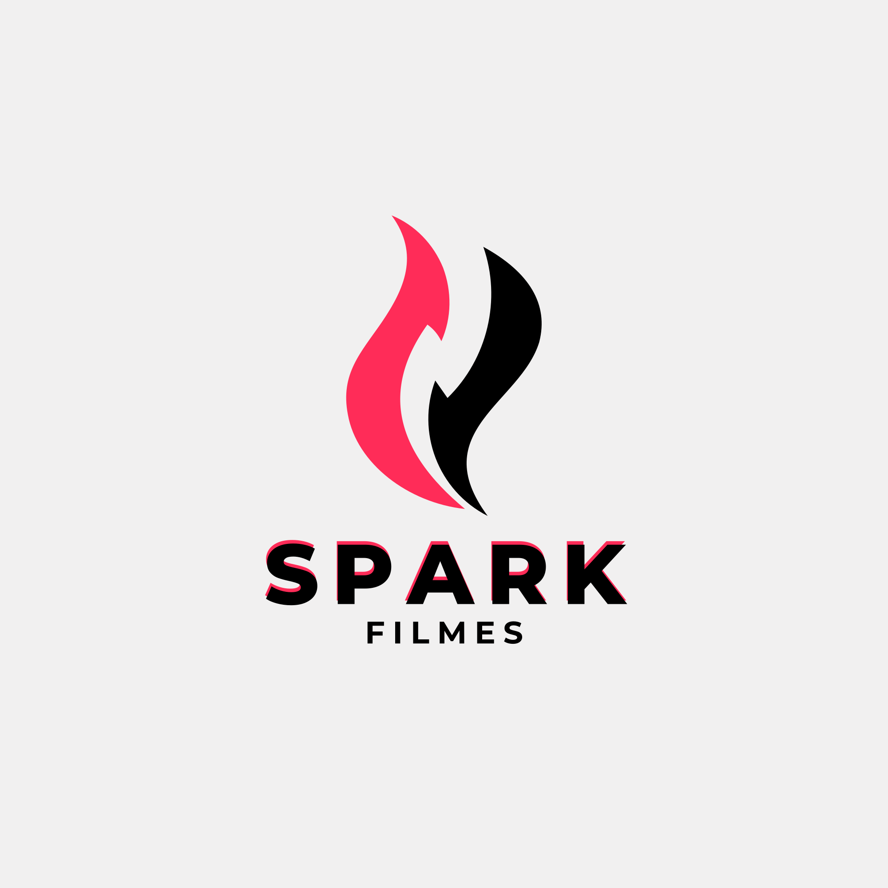

Proposta comercial
Cobertura Fotográfica, Audiovisual e Stories
Em comemoração aos 3 anos do Metrô BH, apresentamos proposta para cobertura completa da coletiva de imprensa e entrega de brindes a clientes.
- Fotógrafo
- Videomaker
- Drone
- Storymaker